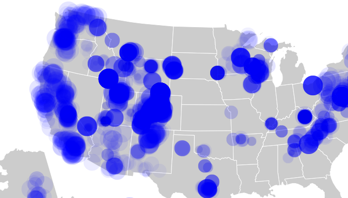
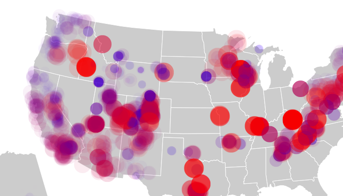
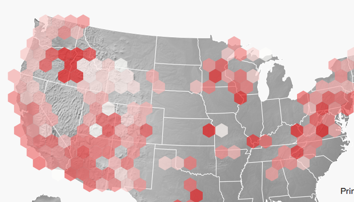
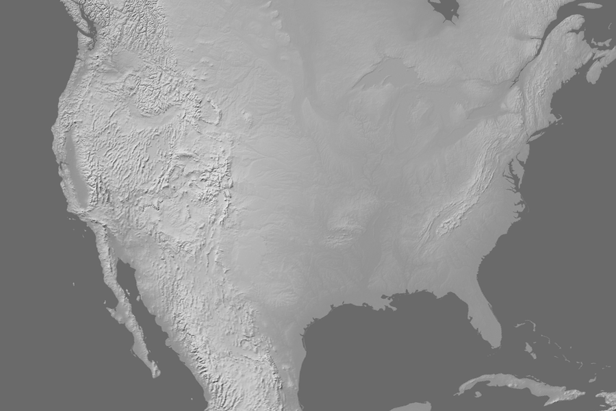
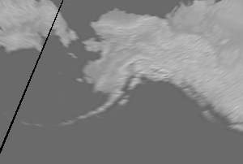
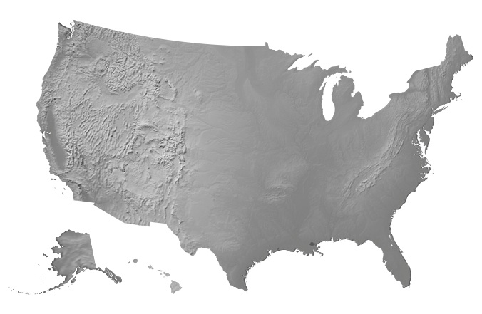

I recently built an interactive map showing the changes in climbing seasons across the US. I encountered some challenges along the way that I think others might face, so I thought I would share my solutions here.
The first challenge was related to the visual encoding of the data, which is a fundamental step in data visualization. There were really only three dimensions in the data: the geographic location (two dimensions) and a month dependent season value (one dimension) for each climbing area. (There were actually 12 dimensions in the season value because the value was different for every month, but this was packaged into the interactive slider.) Normally, visualizations become more challenging with higher dimensional data, but three is reasonable. The geographic location could be displayed on a map and the season value could be encoded with some visual variable of the symbol, such as size, opacity, color, etc. When visualizing the number of climbs in the US, symbol size was effective and regions of higher density were apparent due to the semi-opaque symbols. But the same strategy did not work with the season data:

One reason it didn't work was that the season value for each area was already normalized to a value 0-1000. (This is related to how MountainProject defines "season" for different areas.) This minimized the changes in symbol size. The only quantity that was effectively communicated was the density of climbing areas in different regions, which was not the intention. Another option was to add a linear color scale to the symbols, but result was not much better with most of the map appearing purple and visually dominated by regions with the greatest number of climbing areas:

Nearby climbing areas often share the same season, so I decided to spatially aggregate the data. For this purpose I used the hexbin.js library which allows you to spatially aggregate values and encode the result in the hexagon size or color. One drawback is that due to averaging, hexagons containing many areas show less color change month-to-month compared to a hexagon containing a single area. But you do see the general shift in climbing from the northern lattitudes and mountain states in the summer to the desert southwest in the winter:

I wanted to use the AlbersUS map projection because it's a lower 48 projection that includes Alaska and Hawaii. But I also wanted to use a beautiful shaded relief basemap from naturalearthdata.com. To do this, you would normally take the shaded relief bitmap and reproject it into the desired projection using GDAL, following something like this. The problem was that the AlbersUSA projection is a composite projection with Alaska and Hawaii shifted and scaled. My solution to this probelm was a serious hack, but it got the job done.
First, I used GDAL to produce two bitmaps, one for the lower 48:
gdalwarp -s_srs EPSG:4326 -r lanczos -ts 900 0 -t_srs EPSG:102003 -te -2800000 -1800000 2600000 1800000 GRAY_50M_SR_W.tif lower48.tif

and another for Alaska:gdalwarp -s_srs EPSG:4326 -r lanczos -ts 300 0 -t_srs EPSG:3338 -te -2000000 -200000 2000000 2500000 GRAY_50M_SR_W.tif alaska.tif

I then used thealbersUsa() projection from d3 to create clipping masks and with some tedious shifting and scaling produced the map below. Example code is here.
